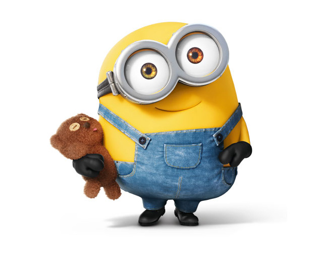

Bob
 Bob is a short and bald minion with multi-colored eyes (green and brown). He often carries around a Teddy Bear that he owns called Tim which is brown with yellow buttoned eyes. Bob is a minion who is more childish and immature than most. He is described as a "Little Brother" who finds love in anything and everything, including a rat (who he named Poochi) he found in a sewer in the Minions film. He also enjoys bedtime stories and playing with his favorite stuffed teddy bear, Tim.
Kevin
 Kevin is a tall, two-eyed minion with sprout cut hair and is usually seen wearing his golf apparel.
Kevin is a tall, two-eyed minion with sprout cut hair and is usually seen wearing his golf apparel.
Kevin loves to make fun of and tease people or Minions, shown when he made fun of Jerry and teases him for being a coward. He loves playing golf and cricket. In Minions he is the leader of the trio in search of a new master. He truly cares about the well-being of the Minion tribe (which is dependent on them having a proper master).
Stuart
 Stuart is a one-eyed short Minion with combed hair. In Despicable Me 2, he is seen dressed up as a girl after Gru is recruited by the Anti-Villain League and sent to Bake My Day to investiagte.
Stuart is a one-eyed short Minion with combed hair. In Despicable Me 2, he is seen dressed up as a girl after Gru is recruited by the Anti-Villain League and sent to Bake My Day to investiagte.
Stuart is playful, friendly, intelligent and funny. He is skillful at video games like his friend Dave. He can also be the most sincere and innocent out of all the minions. He seems to have a rebellious attitude too.